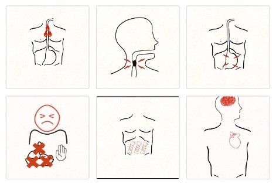

Hey! I'm
Daryl Choo
, a senior undergraduate Electrical Engineering student at Columbia University.Experience
- Mission Director at NASA Micro-g NExT
- Research Assistant at Columbia DitecT Lab
- Research Assistant at UCL
- Electrical Engineering Intern at Shell
- Technical Team Lead at Engineers Without Borders
Languages
Frameworks / Tools
Software
Contact
Email: dcc2161@columbia.edu
LinkedIn: linkedin.com/in/daryl-chia-ler-choo
GitHub: github.com/darylchooo


GAP
Full Stack Web Development for Gastrointestinal Patient Survey
Rome Foundation Research Award Winner 2024